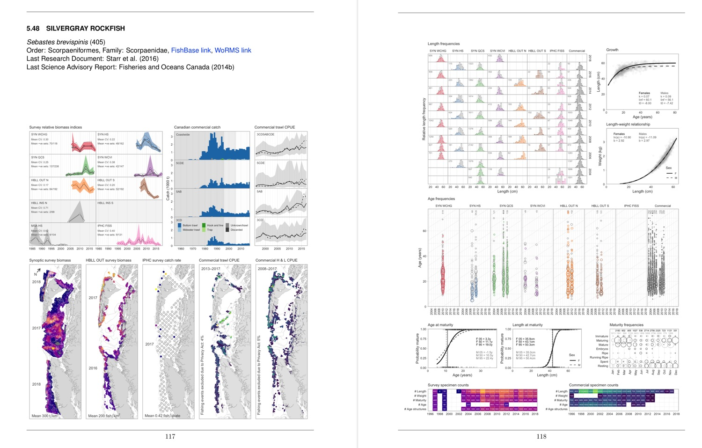
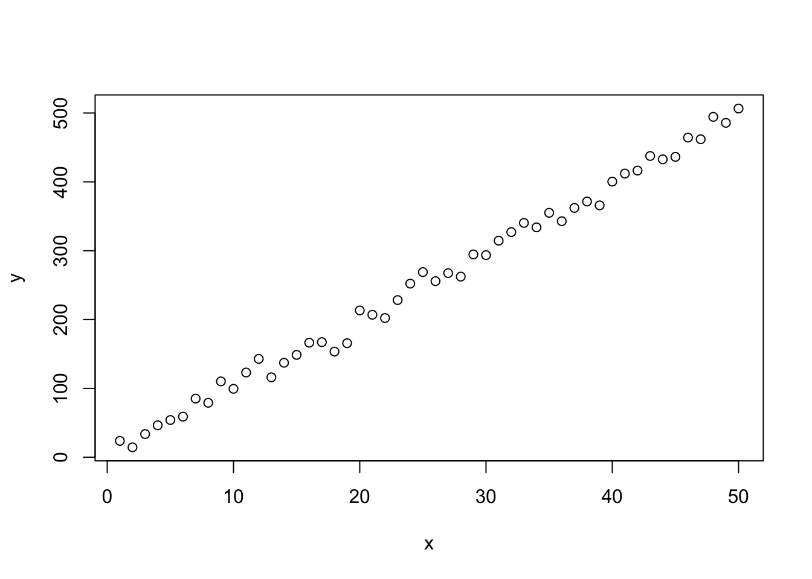
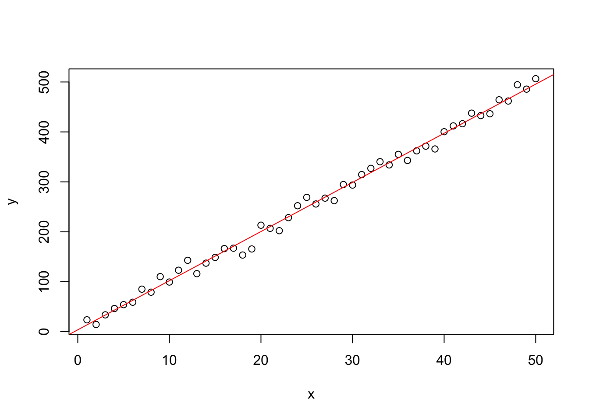

5 Introduction to Rmarkdown
5.1 Motivation
Say you get some tree data from a colleague, and spend a month writing lots of R code to analyse the data. Your code also produces beautiful figures and tables, that you then manually copy into a Word document. You have also written lots of text, and include specific calculated numbers in the text, such as the simple
The average tree height was 10.1 m.
Then your colleague sheepishly tells you that someone found an error in some of the data, and so you need to redo everything. Your heart sinks with the prospect of re-running all your code and making sure you manually copy the correct new figures into your document. Oh, and you need to redo the tables and check all the numbers in your text.
The alternative modern approach is to use Rmarkdown. The idea is that you can generate a ‘dynamic report.’ You write code that contains a mixture of your R code and your write up. You can use this for short analyses, scientific manuscripts, or even a complete thesis.
This introduction, aimed at biologists, will get you started with the basics. You will then be in a good position to learn more details from the RStudio introduction and the online Definitive Guide to Rmarkdown.
Example application
A recent document we wrote in Rmarkdown is A reproducible data synopsis for over 100 species of British Columbia groundfish. For each of 113 species, we produced two pages of figures:

For each species, the layout of the figures is identical (even to show no data when none are available). Producing each figure and manually inserting them into a Word document would be extremely tedious. Instead, the production of the document is automated using Rmarkdown.
Furthermore, the work is transparent and traceable. Because the code produces the figures (they are not pasted in from somewhere), we can trace back from the Rmarkdown code to see the R code that:
- pulled the data from databases
- fit models
- generated plots.
In particular, we intend to periodically update the document as new data become available. While still a lot of work, it is less daunting knowing that the code is already available.
On a practical level, the report has allowed anyone to see the data available, and has consequently increased data transparency between Fisheries and Oceans Canada, the fishing industry, non-governmental organizations, and the public.
This is admittedly a very advanced example with a ton of code (several new R packages) and work behind it, but the idea is to show you what is possible.
5.2 Basic idea
In the above tree example you would have a sentence (written in, say, Word) that says
The average tree height was 10.1 m
The “10.1” is hard-wired into your text, and you typed it on from the value
“10.1” that your R code calculated (in a variable you calculated as avge_height).
In your Rmarkdown document, you would equivalently have:
The average tree height was `r avge_height` mInstead of “10.1” you refer directly to the variable avge_height that you
have already calculated. When you ‘render’ your Rmarkdown document, it
automatically fills in the avge_height value as “10.1.” The
`rmeans that the next bit of code (until the next backtick) should be evaluated using R, and the result inserted.
This is the basic idea. Then, when your colleague mentions the error (or, say, provides you with extra data) you can just re-run your code and the “10.1” will be automatically updated in your document. This concept extends to your tables and figures – they can all be automatically updated.
5.3 Simple example
Here we will generate some data, show some of it in a table, plot it, and show the results of fitting a simple linear regression. Read through this and then you will download and run the code in the exercise.
Generate data
First we’ll need some libraries:
library(kableExtra)
library(dplyr)##
## Attaching package: 'dplyr'## The following object is masked from 'package:kableExtra':
##
## group_rows## The following objects are masked from 'package:stats':
##
## filter, lag## The following objects are masked from 'package:base':
##
## intersect, setdiff, setequal, unionlibrary(xtable)Now generate some data:
set.seed(42)
n <- 50 # sample size
x <- 1:n
y <- 10*x + rnorm(n, 0, 10)
n## [1] 50So we are showing our R code here (we can choose to
hide it if we like), and it has been executed, yielding the printed output of
the value of n (because of the final line of the code).
We can also embed results from R within sentences:
We have a sample size of 50.
This is done (as mentioned above) by the code:
We have a sample size of `r n`We can also say that the maximum value of the data is 506.5564788, or round it to a whole number: the maximum value of the data is 507. These were done by:
the maximum value of the data is `r max(y)`
the maximum value of the data is `r round(max(y))`Show some of the data
Let’s combine the data in a tibble (think of it as a data frame if you don’t know what that is):
data <- tibble(x, y)
data## # A tibble: 50 x 2
## x y
## <int> <dbl>
## 1 1 23.7
## 2 2 14.4
## 3 3 33.6
## 4 4 46.3
## 5 5 54.0
## 6 6 58.9
## 7 7 85.1
## 8 8 79.1
## 9 9 110.
## 10 10 99.4
## # … with 40 more rows(only the first 10 rows get printed here thanks to dplyr).
To have a proper table, we can do
kable(data[1:10,],
caption = "The first rows of my data.")| x | y |
|---|---|
| 1 | 23.70958 |
| 2 | 14.35302 |
| 3 | 33.63128 |
| 4 | 46.32863 |
| 5 | 54.04268 |
| 6 | 58.93875 |
| 7 | 85.11522 |
| 8 | 79.05341 |
| 9 | 110.18424 |
| 10 | 99.37286 |
(If you’re running the code separately the exact style may look different
because of settings we have, but pretty much everything is tweakable with the
kable and kableExtra packages).
Plot then fit a regression data
Now to plot the data:
plot(x, y)
To fit and then print the summary regression output from R:
fit <- lm(y ~ x)
print(summary(fit))##
## Call:
## lm(formula = y ~ x)
##
## Residuals:
## Min 1Q Median 3Q Max
## -27.403 -4.366 -1.193 8.319 21.072
##
## Coefficients:
## Estimate Std. Error t value Pr(>|t|)
## (Intercept) 3.7071 3.2719 1.133 0.263
## x 9.8406 0.1117 88.124 <2e-16 ***
## ---
## Signif. codes: 0 '***' 0.001 '**' 0.01 '*' 0.05 '.' 0.1 ' ' 1
##
## Residual standard error: 11.39 on 48 degrees of freedom
## Multiple R-squared: 0.9939, Adjusted R-squared: 0.9937
## F-statistic: 7766 on 1 and 48 DF, p-value: < 2.2e-16And for a report we can produce a simple table (including a caption) of output and the regression fit:
kable(coefficients(summary(fit)),
caption = "Linear regression fit.")| Estimate | Std. Error | t value | Pr(>|t|) | |
|---|---|---|---|---|
| (Intercept) | 3.707115 | 3.2719100 | 1.133012 | 0.2628368 |
| x | 9.840634 | 0.1116686 | 88.123530 | 0.0000000 |
And create a plot:
plot(x, y)
abline(fit, col="red")
You can even get a bit clever with your writing by including an R ifelse
statement to somewhat automate.
So the maximum value of \(y\) is 507, which is greater than the special value of 400. The “greater than” or “less than” part is given by
`r ifelse(max(y)>400, paste("greater than"), paste("less than"))`But be careful and think about other possibilities – what if \(y=399.9\) in the above example?.
Now, let’s go back and change the data
The big feature of dynamically generating reports is when you go back and change or update the input data. For example, changing the data in the above example and then re-running it to redo the report. The best way to demonstrate this is for you to do it in the following Exercise.
5.3.1 Exercises
Download this file TODO onto your computer and put it where you want to work on this exercise.
The file is an Rmarkdown (
.Rmd) file that you run by either clicking theknitrbutton in RStudio or doingrmarkdown::render("****.Rmd")in R. TODO check these.Check that this has produced a
.pdffile document that looks similar to what you see above (don’t worry if the styling is not identical, but the important content should be). Note that the.Rmdfile is not repeating explanations of how to do certain things TODO reword.Copy the
***.pdfto****-orig.pdf, changento 30 in***.Rmd, and re-run it.Compare the two
.pdffiles. You have done the same analyses but on different data.Hide the output in the first chunk of the ‘Now to fit a linear regression’ section. (In a report you wouldn’t show such results, though it’s very useful when exploring data – I show the output all the time when looking at large data frames).
Explain cache
TODO - check if it’s like this or not (it won’t be, depends on settings I do):
Look at
knitr-cache-tex/folder, order files by ‘Date modified.’Re-run this file. Look at the times of those files.
Change \(n\) back to 50.
Re-run this file. Again look at the times of the files in
knitr-cache-tex/.
So knitr caches results of each chunk, but then re-runs those that have
changed (or those that depend on something that has change).
Very efficient – if you just update some text you don’t need all the calculations redone.
Beware - if you read in, say, a .csv file and the contents of the file change,
knitr will still use the cached read-in of that file, because it won’t know
that the file has changed.
If you’re not sure then it’s safest to delete the knitr-cache-tex/ directory
to re-run all calculations (including loading in of data).